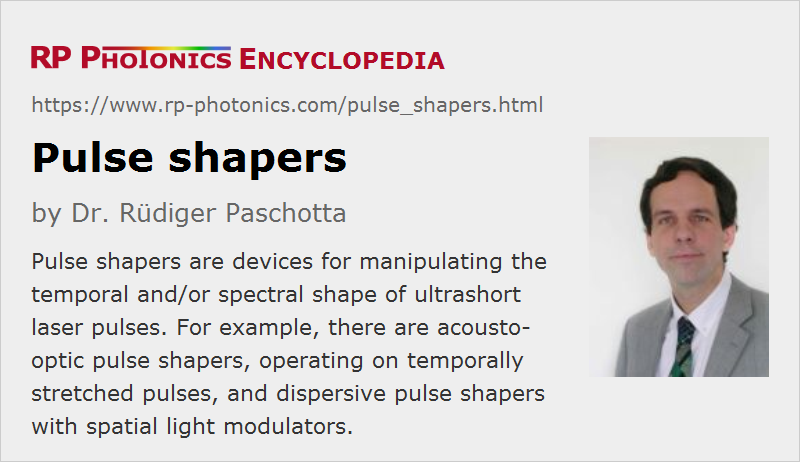

Pulse Shapers
Definition: devices which can be used to modify the temporal or spectral shape of ultrashort light pulses
German: Pulsformer
Categories: photonic devices, light pulses
How to cite the article; suggest additional literature
Author: Dr. Rüdiger Paschotta
In various situations, it is desirable to modify the shape of optical pulses with some kind of pulse shaper. In particular, this occurs in the context of ultrashort pulses, and this article concentrates on that domain, with pulse durations in the picosecond or femtosecond region. Such light pulses are usually generated with picosecond lasers or femtosecond lasers of various kinds.
Pulse shaping often concerns the optical power versus time, but it can also involve the time-dependent instantaneous frequency or the optical spectrum. Different kinds of pulse shapes may be required, depending on the application. For example, one may simply obtained a flat spectral phase. A more complicated case is the generation of a certain predefined temporal evolution of the instantaneous frequency. In some cases, quite complex pulse shapes are formed – not just simple shapes like Gaussian, sech2 or parabolic ones, but pulses with strong and complicated modulations of optical power and phase.
Very different physical principles of pulse shaping can be applied, and the most important ones of those are explained in the following sections.
Special cases of pulse shaping are pulse compression and pulse stretching, where the modification of the pulse duration is of primary interest, and usually not the detailed temporal or spectral shape.
This article does not deal with the shaping of electrical pulses, as is often applied for example in the context of signal processing. Also, the article does not treat pulse shaping effects within mode-locked lasers, but only pulse shaping applied to pulses after their generation. Besides, it does not treat nonlinear pulse shaping devices such as saturable absorbers.
Methods of Pulse Shaping
Direct Temporal Shaping
In principle, on could directly manipulate pulse shapes with some kind of optical modulator. However, even the fastest available modulators are at most fast enough for very coarse temporal shaping of relatively long picosecond pulses. Therefore, completely different methods, as described in the following sections are usually applied.
Dispersive Pulse Shaping
The temporal shape of a light pulse may be modified by applying chromatic dispersion. In a simplified physical picture, this means that the relative arrival times of different wavelength components of pulses are manipulated through the wavelength-dependent group delay in the pulse shaper.
In simple cases, one applies chromatic dispersion with a fixed spectral profile. For example, the dispersion profile of a chirped mirror, a volume Bragg grating or a fiber Bragg grating can be optimized for a specific pulse shaping purpose.
In other cases, variable (adjustable or programmable) pulse shaping is required. That can be realized with different techniques. Usually, one employs some kind of Fourier synthesis methods (also called Fourier transform pulse shaping), where one somehow manipulates the amplitude and/or the phase of many different spectral components such that the desired temporal pulse shape is obtained. Such approaches generally do not require extremely fast modulators and the like, but instead the spatial or temporal separation of different wavelength components.
A typical technique is to spatially separate the wavelength components with a diffraction grating, then to make them propagate on parallel paths with a lens, then send the light through a spatial light modulator (e.g. a nematic liquid crystal modulator) and finally spatially recombine the wavelength components with additional optical elements or with the same ones as used for accomplishing the spatial separation. Figure 1 shows a typical kind of optical setup.
Each element of the spatial light modulator may e.g. act as a phase modulator for a small spectral range. With other modulators, one can also adjust the spectral amplitude, or both amplitude and phase, and sometimes the polarization. Phase-only modulators are often used, and although they do not provide complete freedom for pulse shaping, this approach is sufficient in many cases, since the spectral phase is of primary importance.
Typically, the spatial light modulator will have a number of channels of the order of 1000. That means that around 1000 spectral features can be controlled independently.
Note that chromatic aberrations of lenses can lead to non-perfect recombination of the different wavelength components, and thus to complicated spatio-temporal effects. In that respect, setups with curved mirrors are superior, because they do not exhibit chromatic dispersion.
Generally, the optical alignment of such ultrafast pulse shapers is quite critical. If the different wavelengths components are not perfectly recombined in space after the device, unwanted spatio-temporal effects can arise. Effectively, one then obtains different temporal pulse shapes at different locations.
Note that diffraction at the light modulator, depending on the programed modulation pattern, prohibits perfect collection of all light into a single output beam. Nevertheless, the technique can be used for generating arbitrary phase and amplitude profiles within the limitations which are essentially given by the spectral range and resolution, as explained in the following.
The obtained temporal resolution is limited not by the spectral resolution, but by the width of the covered spectral range. On the other hand, the spectral resolution determines the temporal range which the shaped pulses can span. For example, a double pulse with large temporal separation has a rapidly modulated optical spectrum.
Fourier transform pulse shapers are tentatively easier to realize for femtosecond pulses than for picosecond pulses, since the larger bandwidth of shorter pulses makes it easier to spatially separate spectral components.
Note that a rather slow kind of spatial amplitude modulator can be used; it is in fact common to use liquid crystal modulators. Their limited speed only implies that the details of the pulse shaping cannot be rapidly modified. The maximum pattern update rate is of the order of 100 Hz. It is no problem, however, to shape pulse trains with very high pulse repetition rate, if it is acceptable that not every pulse can be shaped individually.
Pulse Shaping with Deformable or Moving Mirrors
Instead of a liquid crystal modulator, one may use a deformable mirror, as otherwise used in adaptive optics, for example. When different wavelength components hit different positions on the mirror, their optical phase can be controlled independently if the elevation of those points can be controlled independently. Instead of a deformable mirror, one may also use an array of small movable mirrors. Normally, the number of independently controllable spectral features is substantially smaller than achievable either with liquid crystal modulators or with acoustical-optic devices as described below.
A particularly simple version uses one flat mirror, which is only tilted, instead of the deformable mirror. Tilting produces only a linear spectral phase, which results in a temporal shift. The device is then actually not a true pulse shaper, but only a pulse shifter. In comparison with other types of optical delay lines, however, the modulation frequencies can be substantially higher.
Acousto-optic Pulse Shaping
There are different kinds of acousto-optic pulse shapers. One of them is quite similar to the Fourier transform pulse shapers explained above; essentially, one uses an acousto-optic modulator as the spatial light modulator. At the time with the optical pulses passes the modulator, it must contain an acoustic pattern with a spatial shape which leads to the wanted degree of diffraction for the different wavelength components. For that purpose, the modulator is usually driven with a programmable RF function generator, also called arbitrary waveform generator (AWG).
In comparison with the pulse shape as explained above, the following aspects are different with an acousto-optic modulator:
- The insertion loss is significantly higher.
- The modulation pattern can be updated much more quickly – for example, with an update rate of the order of 100 kHz (or even more) instead of only 100 Hz. On the other hand, it is not possible to apply the shaping to pulse trains with high pulse repetition rates as they are obtained from typical mode-locked lasers (e.g. 100 MHz), since the generated acoustic pattern moves in the device with the velocity of sound. For each optical pulse, one needs to prepare a well synchronized acoustic pulse. The length of the device divided by the velocity of sound sets an upper limit for the inverse update rate. Therefore, such pulse shapers are suitable for ultrafast amplifier systems, for example, where the pulse repetition rate is substantially reduced with a pulse picker, but not directly for mode-locked lasers.
- It is more difficult to handle very broadband pulses. This is essentially because the deflection angle of the modulator introduces a substantial additional wavelength-dependent path length, i.e., chromatic dispersion; although that can in principle be compensated, it is difficult to do that without introducing higher-order chromatic dispersion.
Another kind of acousto-optic pulse shaper, which can be realized with a much simpler and more compact optical setup, is based on a kind of acousto-optic tunable filter, here called acousto-optic programmable dispersive filter (AOPDF). In that device, the light pulse propagates collinearly with a sound wave, which is again controlled with a computer-controlled function generator connected to the piezo transducer of the modulator. The interaction with the acoustic wave leads to a transfer of energy into a different polarization mode – for example, from ordinary to extraordinary polarization. For one particular acoustic frequency, that phase-matched transfer works only in a limited range of optical frequencies. With a suitable superposition of acoustic waves, one can control amplitude and phase of the whole optical output with extraordinary polarization.
Applications of Pulse Shapers
The following sections give a few examples for applications of ultrafast pulse shapers.
Compensation of Dispersion and Nonlinearities in Amplifier Systems
In an ultrafast amplifier system based on chirped pulse amplification (CPA), it is essential to have a pulse compressor which quite precisely produces a flat spectral phase of the output, so that the maximum peak power and minimum pulse duration are obtained. Due to various device tolerances, this is difficult to achieve in cases where a large amount of pulse stretching is required, for example due to the high pulse energies. It can then be convenient to have a programmable pulse shaper in addition to a fixed pulse stretcher, with which the fine adjustment of the spectral phase can be done. It is then also possible to compensate for additional nonlinear phase changes arising from the Kerr nonlinearity of the gain medium. That way, one may also be able to tolerate stronger nonlinear effects.
Optical Communications
Dispersion compensation is also frequently required in optical fiber communications systems. Pulse shapers can provide flexibly adjustable dispersion compensation. This could be particularly interesting for systems using time division multiplexing at very high data rates.
Besides, it is possible to encode information on ultrashort light pulses through their spectrum – for example by imprinting a certain spectral phase, which also totally changes their temporal profile. The full peak power of the original pulse is retrieved by a second pulse shaper only if it basically compensates for the originally applied phase modulation. This can be used in the context of optical code division multiple access (O-CDMA) systems. Here, one uses multiple optical transmitters which use different phase encodings, and for each one a receiver which applies the opposite spectral phase changes, with which it can detect only the signals from the corresponding transmitter [3].
Control of Chemical Reactions
It is well known that chemical reactions can be initiated by light which is used to excite atoms or molecules. This does usually not lead to an exact control; different kinds of chemical reactions may be initiated at the same time. However, in some situations it is possible to carefully control chemical reactions by using tailored femtosecond pulses from a computer-controlled pulse shaper [2].
Quite complex pulse shapes can be required, which may not even be known in at once; they are related to complicated quantum dynamics of molecules. There are schemes for adaptive pulse shaping, where one uses a computer algorithm for optimizing the pulse shape such that one e.g. obtains a maximum amount of a certain reaction product.
Optical Coherence Tomography
In some optical coherence tomography systems, one requires very high scan rates. A limiting factor can be the speed of an optical delay line. Quite high speeds can be achieved with a pulse shaper including a tilted mirror, as explained above. Note, however, that wavelength-swept lasers can enable far higher scan speeds.
Performance Checks with Pulse Characterization
Various methods of pulse characterization can be applied to monitor pulse shapes, e.g. before and after a pulse shaper in order to monitor the operation. In particular, there are methods of frequency resolved optical gating (FROG) and spectral phase interferometry (SPIDER), apart from optical cross-correlators.
Suppliers
The RP Photonics Buyer's Guide contains 9 suppliers for pulse shapers. Among them:
Questions and Comments from Users
Here you can submit questions and comments. As far as they get accepted by the author, they will appear above this paragraph together with the author’s answer. The author will decide on acceptance based on certain criteria. Essentially, the issue must be of sufficiently broad interest.
Please do not enter personal data here; we would otherwise delete it soon. (See also our privacy declaration.) If you wish to receive personal feedback or consultancy from the author, please contact him e.g. via e-mail.
By submitting the information, you give your consent to the potential publication of your inputs on our website according to our rules. (If you later retract your consent, we will delete those inputs.) As your inputs are first reviewed by the author, they may be published with some delay.
Bibliography
| [1] | M. M. Wefers and K. A. Nelson, “Analysis of programmable ultrashort wave-form generation using liquid-crystal spatial light modulators”, J. Opt. Soc. Am. B 12 (7), 1343 (1995), doi:10.1364/JOSAB.12.001343 |
| [2] | A. Assion et al., “Control of chemical reactions by feedback-optimized phase-shaped femtosecond laser pulses”, Science 282, 919 (1998), doi:10.1126/science.282.5390.919 |
| [3] | H. P. Sardesai, C.-C. Chang and A. M. Weiner, “A femtosecond code-division multiple-access communication system test bed”, IEEE J. Lightwave Technol. 16 (11), 1953 (1998), doi:10.1109/50.730356 |
| [4] | F. Verluise et al., “Amplitude and phase control of ultrashort pulses by use of an acousto-optic programmable dispersive filter: pulse compression and shaping”, Opt. Lett. 25 (8), 575 (2000), doi:10.1364/OL.25.000575 |
| [5] | A. M. Weiner, “Femtosecond pulse shaping using spatial light modulators”, Rev. Sci. Instrum. 71, 1929 (2000), doi:10.1063/1.1150614 |
| [6] | J. C. Vaughan et al., “Diffraction-based femtosecond pulse shaping with a two-dimensional spatial light modulator”, Opt. Lett. 30 (3), 323 (2005), doi:10.1364/OL.30.000323 |
| [7] | J. W. Wilson, P. Schlup and R. A. Bartels, “Ultrafast phase and amplitude pulse shaping with a single, one-dimensional, high-resolution phase mask”, Opt. Express 15 (14), 8979 (2007), doi:10.1364/OE.15.008979 |
| [8] | J. T. Willits, A. M. Weiner and S. T. Cundiff, “Theory of rapid-update line-by-line pulse shaping”, Opt. Express 16 (1), 315 (2008), doi:10.1364/OE.16.000315 |
See also: ultrashort pulses, pulse compression, pulse characterization, liquid crystal modulators
and other articles in the categories photonic devices, light pulses
|  |
If you like this page, please share the link with your friends and colleagues, e.g. via social media:
These sharing buttons are implemented in a privacy-friendly way!